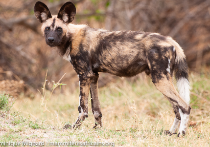

Ce ne sont pas les plus gros qui ont le plus de petits en une seule fois.L'éléphant n'en a qu'un.
Cette sorte de hérisson à gauche, détient le record : 31 petits. Tous ont survécu, sauf un! Et ce hamster à droite, qui se domestique très bien, peut avoir jusqu'à 22 petit
Entre 10 et 18 pour un opossum à gauche de Virginie à gauche, ce qui pose problème, car la femelle n'a que 13 tétines! ET jusqu'à 13 pour le lycaon, à droite, cette espèce de chien qui vit dans la savane boisée africaine